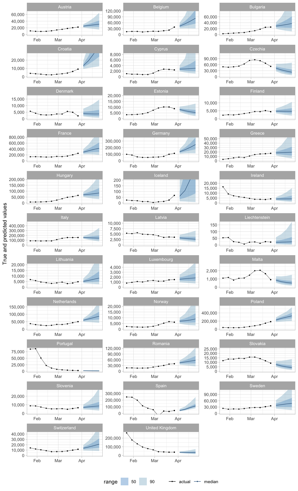
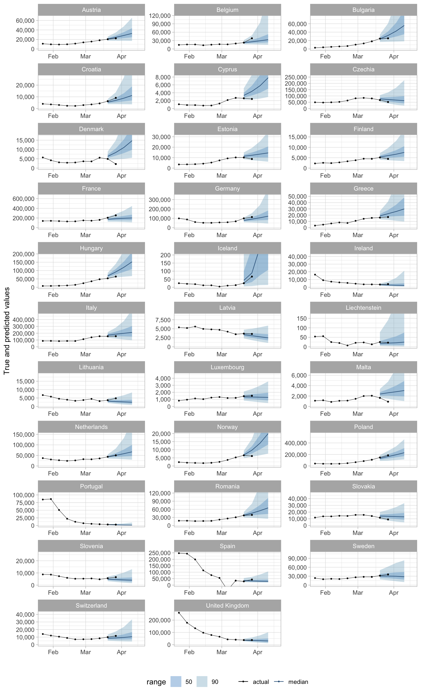
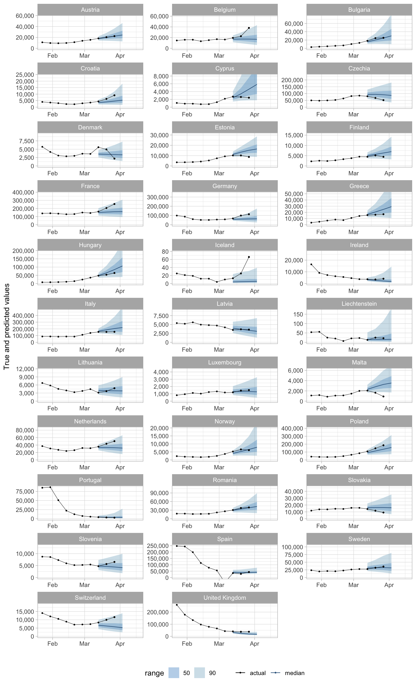
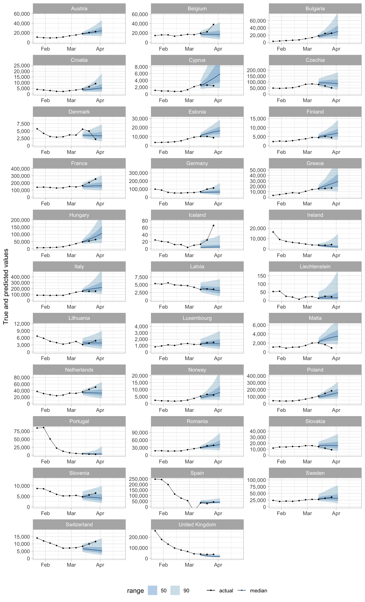
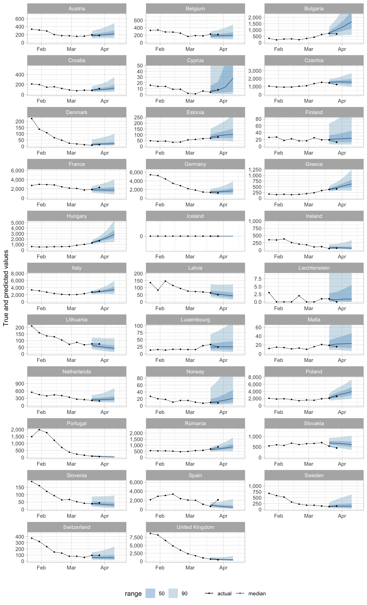
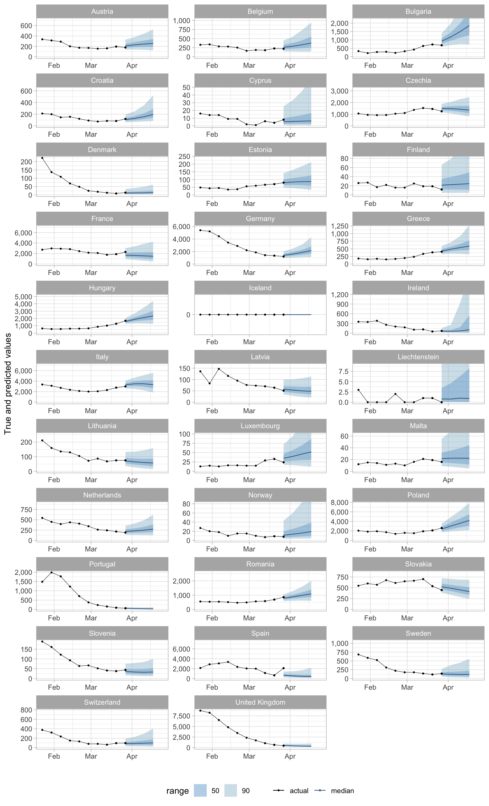
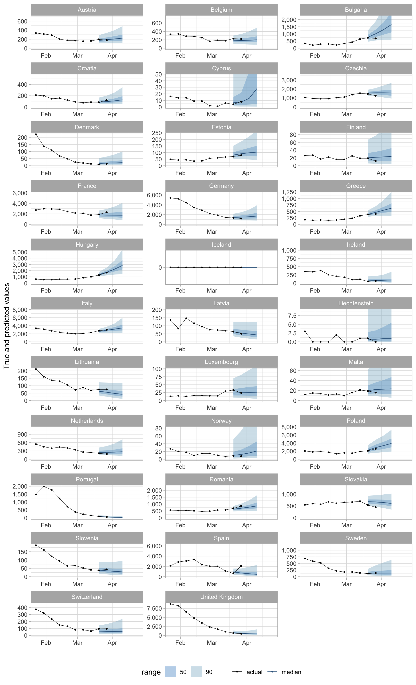
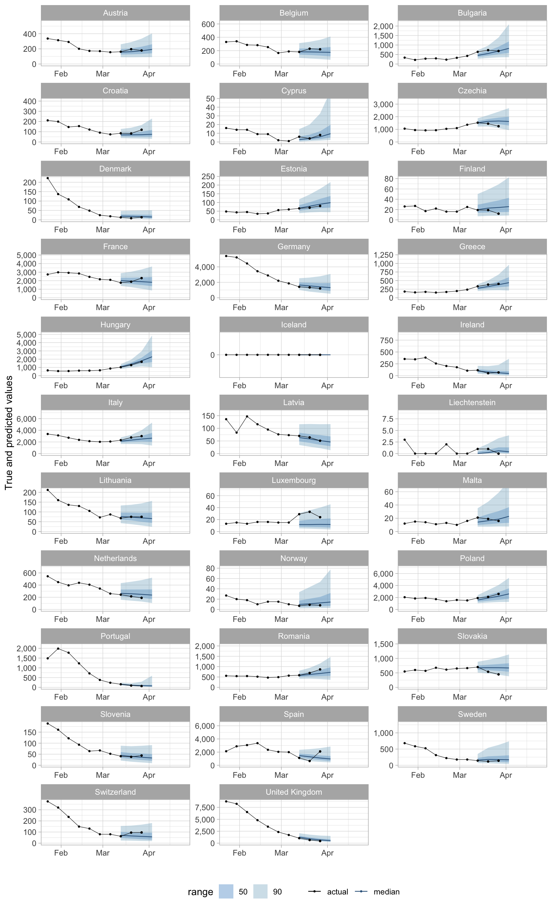
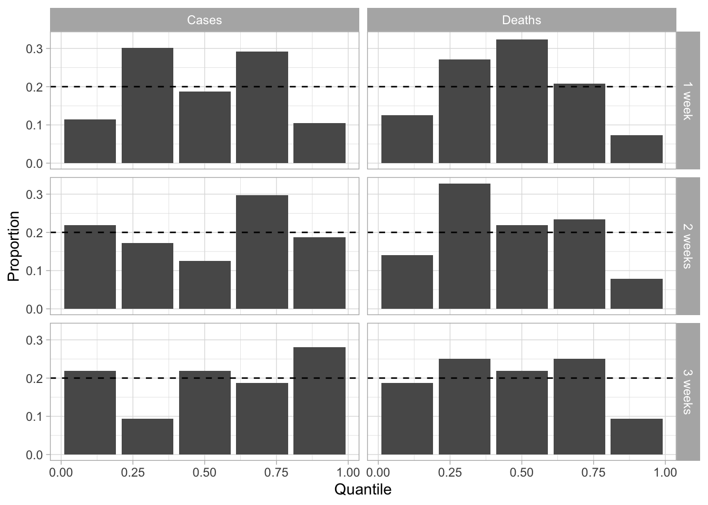

This report shows an evaluation of ensemble forecasts created from forecasts for Covid-19 case and death numbers in 32 European countries submitted to the European COVID-19 Forecast Hub, comparing forecasts from up to 4 weeks ago to the data available today.








Shown below are PIT histograms for the most recent ensemble forecasts. These show the proportion of true values within each predict quantile (width: 0.2).
